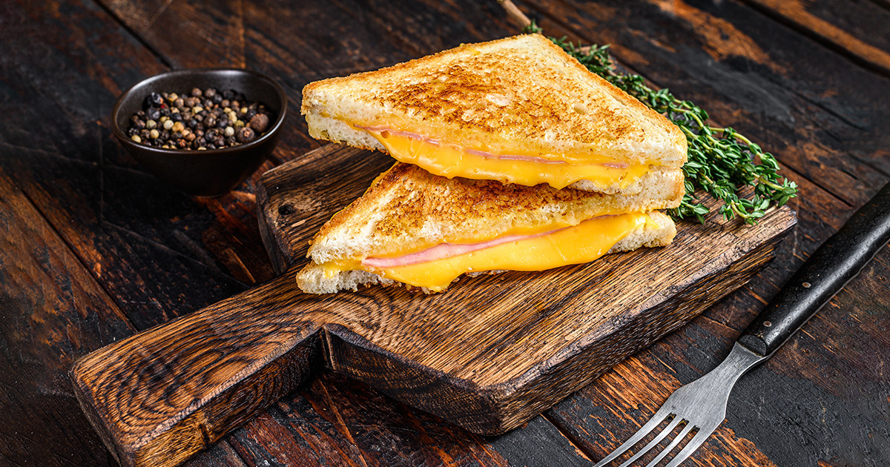

GRILLED CHEESE RECIPE

Description
A grilled cheese sandwich is a fantastic meal for any occasion. It's crunchy on the outside and
full of hot molten goodness on the inside. A true grilled cheese includes nothing but bread, cheese and butter;
variations with any other fillings should be referred to as melts.
Ingredients
You will need:
- Wheat Bread of your favorite variety - 2 slices per sandwich
- 100 g cheese per sandwich (we recommend Mild Wisconsin Cheddar)
- 1 tsp butter
- Prepare a frying pan and preheat it on mid-high heat.
- Add the butter to the pan.
- While the butter is melting, slice the cheese and arrange it on a slice of bread.
- Cover the cheese with the other slice of bread.
- Carefully put the sandwich into the pan and fry it in butter on one side.
- In about 2 minutes, the bread should be golden brown and the cheese should start melting. Flip the sandwich.
- Fry on the other side for about 2 minutes.
- Take the sandwich off the pan. If desired, cut it down the center to get a pretty picture like ours.
- Enjoy your delicious grilled cheese! Tell your friends!